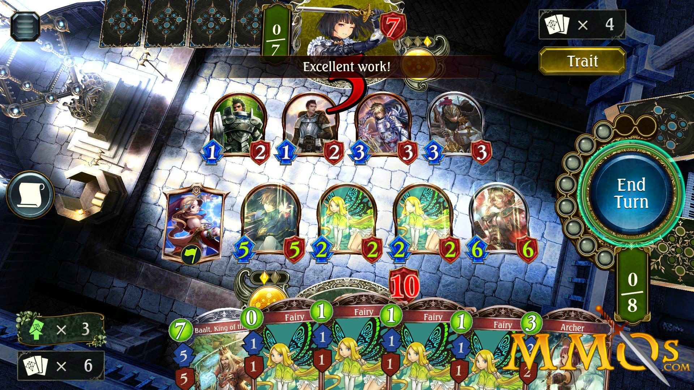

I've been playing drums for about 14 years. It's always been a strong passion of mine.
Right now, I am in a band called Pallenova. We've been together for about four years now, and it's been a blast playing with the other guys!
VIDEO GAMES
Alright, I absolutely love video games. Anytime I can get a chance to be a complete badass, save the world, and be the hero, I'll gladly do it from the comfort of my chair.
Video games are truly a god send. I don't know what I'd do without them. Here are some that I play pretty often, among others.
Shadowverse
This is one of my all time favorites right now. Shadowverse is a turn-based card game where each player creates their own deck and can play online with anyone in the world. It's completely free-to-play, and easy to get the hang of.
There so many cards available to collect and so many different types of decks to choose from, so every player can find their favorite playstyle. The game is available on PC, iOS, and Android.
As with most games, the meta is always changing with new cards and balance changes, so there is sadly
a lot of cut and paste decks out there, but every once in a while you find a good match with someone who has both creativity and innovation.

Phantasy Star Online 2
PSO2 is the long-awaited (at least by the fanbase) sequel to the original Phantasy Star Online that released onto the Sega Dreamcast in 2001. If you ever played the original, you already know that it was incredibly hard to put down once you started playing.
With that being said, PSO2 blows its predecessor out of the water in every aspect. The combat feels amazing, the game itself looks amazing, and there are so many things to keep yourself involved and immersed in the PSO universe.
I'm talking character classes, subclasses, fifteen types of weapons, PvP, PvE, incredibly rare gear, and a character customization the likes I have never seen before.
All of this sounds good right? Well...unfortunately. Since its launch in 2012, PSO2 has been available SOLELY in Japan. That's right. It's only in Japan.
FORTUNATELY! The community surrounding the Phantasy Star franchise is strong-willed and innovative, and they will have their game.
Since the initial release, the game has undergone many changes and roughly 80% of the game has been translated to English, on PC, wheras the PS4 version, while on the same servers, will not be translated unless Sega decides to do so.
Cool Movies
Primer
I love thinking about time-travel: the what-ifs of the past and future. Primer is a movie that straight-up does it right.
I know what you're thinking. It's time-travel. How can any story involving time-travel be anything short of confusing?
Well, you'd be right in thinking that. The movie is not easy to comprehend by any means, but just put yourself in the characters' shoes. The two main characters "accidently" create a working time machine in a garage.
It's not a conventional design either, and the functionality of the device is wild. I'd hate to spoil such a great movie, but the things they do with the time machine might just have more benign consequences than you'd think.
I'd rate this one a goseeit ouf of 10.
The Prestige
Another great movie that dabbles in an equally mysterious, and reveting plot.
There's a few twists in there that are hard to see coming, but when they do come, the glass of my mind becomes shattered.
It is a sheer battle of wits between two stage magicians in order to surpass the other in greatness both in magic and in mind.
The ending to this one was pretty nuts.